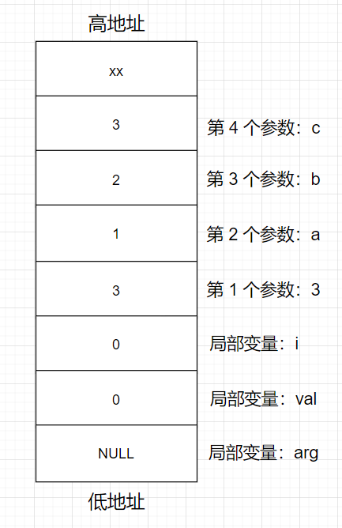

C语言中的可变参数和可变参数宏
一、可变参数
在 C 语言中实现可变参数需要用到这下面这几个数据类型和函数（其实是宏定义）：
va_listva_startva_argva_end
处理动态参数的过程是下面这 4 个步骤：
- 定义一个变量
va_list arg； - 调用
va_start来初始化arg变量，传入的第二个参数是可变参数(三个点)前面的那个变量； - 使用
va_arg函数提取可变参数：循环从arg中提取每一个变量，最后一个参数用来指定提取的数据类型。比如：如果格式化字符串是%d，那么就从可变参数中提取一个int型的数据，如果格式化字符串是%c，就从可变参数中提取一个char型数据； - 数据处理结束后，使用
va_end来释放arg变量。
1、使用示例
1 | |
执行这段代码会依次输出 1 2 3。
这里要注意一点，虽然传入的参数个数是不固定的，但是参数的类型都必须是一样的。另外，处理函数中必须要知道传入的参数有多少个，上面的例程中处理函数是通过第一个参数来判断的，如果是处理 char * 的话，则是通过最后一个可变参数 NULL 来判断的。
2、可变参数原理
2.1 可变参数的几个宏定义
前面说到了，可变参数实际上就是宏定义，下面来看一下：
1 | |
注意，
va_list就是一个char *类型的指针
2.2 可变参数的处理过程
下面结合这些宏定义和前面的示例来看一下柯柏年参数的处理过程。
在 C 语言中，参数是从右到左，逐个压入栈中，因此在进入 my_printf_int 的函数体中，栈中的布局如下：

首先执行 va_start(arg, num)，带入宏定义中如下：
1 | |
宏扩展后得到：
1 | |
也就是让 arg 指向栈中第一个参数的地址。
然后执行 va_arg：
1 | |
把上面这语句，带入下面这宏定义：
1 | |
宏扩展之后得到：
1 | |
也就是先把 arg 自增 int 型数据的大小（4 个字节），然后再把这个地址减去 4 字节，得到的地址里的这个值，强转成 int 型，赋值给 val。
简单来说，就是得到当前 arg 指向 int 型数据，然后把 arg 指向位于高地址的下一个参数位置。
va_arg 可以反复调用，直到获取栈中所有的函数传入的参数。
再然后指向 va_end(arg)：
把上面这语句，带入下面这宏定义：
1 | |
宏扩展之后得到：
1 | |
这里直接把指针 arg 设置为空。因为栈中的所有动态参数被提取后，arg 的值为最后一个参数的上一个地址，如果不设置为 NULL 的话，下面使用的话就得到未知的结果，为了防止误操作，需要设置为 NULL。
3、printf
通过前面的了解，再来看 printf 的实现就很好理解了，下面是 GNU 中的 printf 源码：
1 | |
二、可变参数宏
1、引入
前面讲了可变参数，下面来看一下可变参数宏，先看一段代码：
1 | |
变参宏的实现形式其实跟变参函数差不多：用 ... 表示变参列表，变参列表由不确定的参数组成，各个参数之间用逗号隔开。可变参数宏使用 C99 标准新增加的一个 __VA_ARGS__ 预定义标识符来表示前面的变参列表，而不是像变参函数一样，使用 va_list、va_start、va_end 这些宏去解析变参列表。预处理器在将宏展开时，会用变参列表替换掉宏定义中的所有 __VA_ARGS__ 标识符。
使用宏定义实现一个变参打印功能，你会发现，它的实现甚至比变参函数还方便！内核中的很多打印宏，经常使用可变参数宏来实现，宏定义一般为下面这个格式。
1 | |
在这个宏定义中，有一个固定参数，通常为一个格式字符串，后面的变参用来打印各种格式的数据，跟前面的格式字符串相匹配。
这种定义方式有一个漏洞，即当变参为空时，宏展开时就会产生一个语法错误，如下：
1 | |
因为当宏展开后，就变成了下面这个样子。
1 | |
宏展开后，在第一个字符串参数的后面还有一个逗号，所以就产生了一个语法错误。我们需要继续对这个宏进行改进，使用宏连接符 ##，来避免这个语法错误。
2、继续改进
接下来，使用宏连接符 ## 来改进上面的宏。
宏连接符 ## 的主要作用就是连接两个字符串，我们在宏定义中可以使用 ## 来连接两个字符。预处理器在预处理阶段对宏展开时，会将 ## 两边的字符合并，并删除 ## 这两个字符。
1 | |
如上面的程序，我们定义一个宏。
1 | |
这个宏的功能就是连接字符 a 和 x。在程序中，A(1) 展开后就是 a1，A() 展开后就是 a。我们使用 printf() 函数可以直接打印变量 a1、a 的值，因为宏展开后，就相当于使用 int 关键字定义了两个整型变量 a1 和 a。上面的程序可以编译通过，运行结果如下。
1 | |
知道了宏连接符 ## 的使用方法，我们接下来就可以就对 LOG 宏做一些修改。
1 | |
我们在标识符 __VA_ARGS__ 前面加上宏连接符 ##，这样做的好处是：
- 当变参列表非空时，
##的作用是连接fmt，和变参列表，各个参数之间用逗号隔开，宏可以正常使用 - 当变参列表为空时，
##还有一个特殊的用处，它会将固定参数 fmt 后面的逗号删除掉，这样宏也就可以正常使用了
3、可变参数宏的另一种写法
当我们定义一个变参宏时，除了使用预定义标识符 __VA_ARGS__ 表示变参列表外，还可以使用下面这种写法。
1 | |
使用预定义标识符 __VA_ARGS__ 来定义一个变参宏，是 C99 标准规定的写法。而上面这种格式是 GNU C 扩展的一个新写法。我们不再使用 __VA_ARGS__，而是直接使用 args... 来表示一个变参列表，然后在后面的宏定义中，直接使用 args 代表变参列表就可以了。
跟上面一样，为了避免变参列表为空时的语法错误，我们也需要添加一个连接符 ##。
1 | |
使用这种方式，你会发现这种写法比使用 __VA_ARGS__ 看起来更加直观和方便。
4、内核中的可变参数宏
可变参数宏在内核中主要用于日志打印。一些驱动模块或子系统有时候会定义自己的打印宏，可以支持打印开关、打印格式、优先级控制等。如在 printk.h 头文件中，我们可以看到 pr_debug 宏的定义。
1 | |